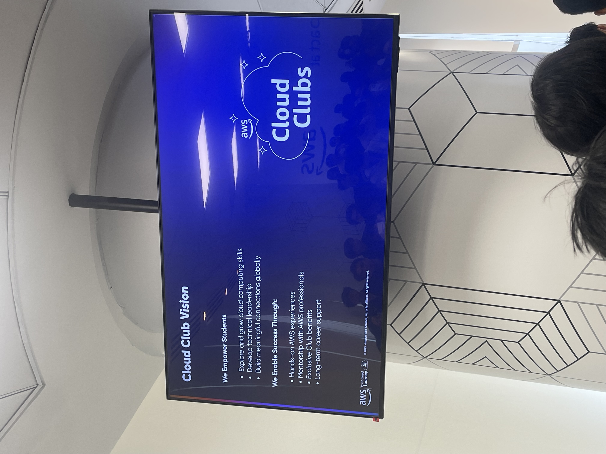
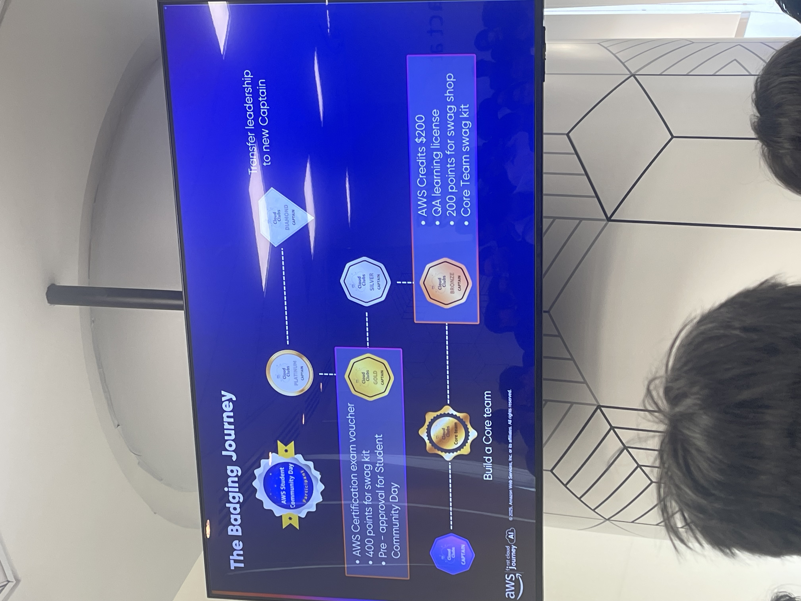
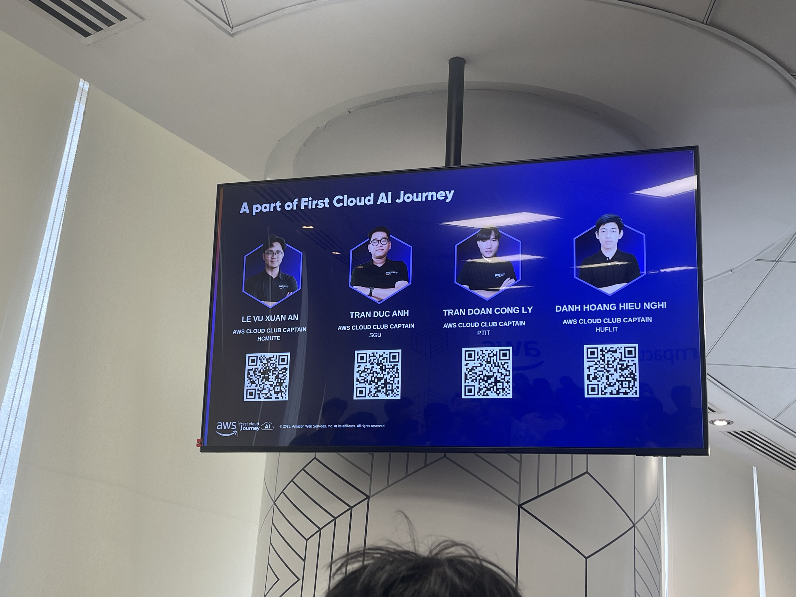
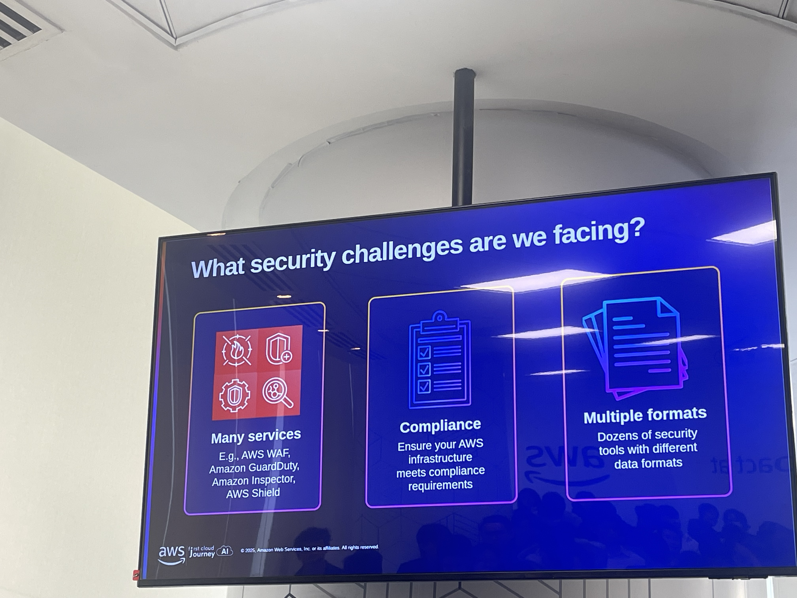
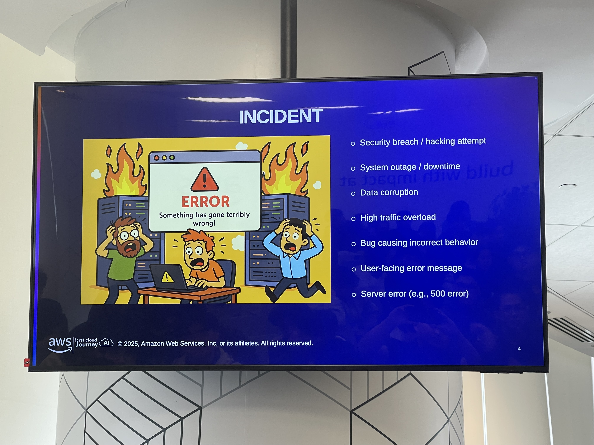

Event 4
AWS Well-Architected Security Pillar
I. Thông tin chung về sự kiện
- Tên sự kiện: AWS Well-Architected Security Pillar
- Thời gian: 08:30 – 12:00, ngày 29/11/2025 (morning only)
- Địa điểm: AWS Vietnam Office
- Mục tiêu chính:
- Làm rõ vai trò của Security Pillar trong AWS Well-Architected Framework cùng mô hình Shared Responsibility.
- Tóm lược 5 trụ cột bảo mật quan trọng: Identity & Access Management, Detection, Infrastructure Protection, Data Protection, Incident Response.
- Phân tích các best practices, lỗi phổ biến và rủi ro thực tế mà doanh nghiệp Việt Nam thường gặp khi triển khai cloud.
- Trình diễn các demo minh họa: IAM policy simulation, detection-as-code, firewall, IR playbook.
II. Nội dung chi tiết theo dòng thời gian
2.1. Opening & Security Foundation (08:30 – 08:50)
Phần mở đầu tạo nền tảng về tư duy bảo mật trên AWS:
-
Tầm quan trọng của Security Pillar trong Well-Architected Framework
- Security không phải lớp “bổ sung về sau” mà phải được lồng vào kiến trúc ngay từ giai đoạn thiết kế.
- Hệ thống thiếu bảo mật dễ gặp các tình huống:
- Rò rỉ dữ liệu hoặc truy cập trái phép.
- Ngừng dịch vụ do lỗi cấu hình hoặc tấn công mạng.
- Mất dữ liệu / sai lệch dữ liệu do thiếu backup & encryption.
- Tắc nghẽn lưu lượng nếu không có lớp bảo vệ phù hợp.
-
Các nguyên lý bảo mật trọng yếu:
- Least Privilege: chỉ cấp quyền tối thiểu đủ dùng.
- Zero Trust: không giả định bất cứ thành phần nào “đáng tin” theo mặc định.
- Defense in Depth: bảo vệ theo nhiều tầng từ identity, network đến data.
-
Shared Responsibility Model
- AWS chịu trách nhiệm security OF the cloud.
- Khách hàng chịu trách nhiệm security IN the cloud, gồm IAM, cấu hình tài nguyên, bảo mật dữ liệu, logging, IR…
-
Rủi ro phổ biến tại thị trường Việt Nam
- Access key tồn tại dài hạn và bị lộ/lạm dụng.
- S3 bucket public mà người vận hành không biết.
- Máy chủ/public endpoint mở ra Internet không cần thiết.
- Thiếu logging hoặc bật không đầy đủ khiến việc điều tra sự cố khó khăn.
2.2. Pillar 1 – Identity & Access Management (08:50 – 09:30)
Phiên này tập trung vào cách thiết kế hệ thống IAM hiện đại, phù hợp môi trường multi-account:
-
IAM Users, Roles, Policies – loại bỏ credential dài hạn
- Không sử dụng IAM user + access key lâu dài cho workload.
- Ưu tiên IAM Role + temporary tokens để tăng tính an toàn.
- Policy phải tuân thủ least privilege, tránh
Action:* hoặc Resource:*.
-
IAM Identity Center + AWS Organizations
- IAM Identity Center (SSO) là trọng tâm của kiến trúc IAM hiện đại.
- Kết hợp với Organizations để quản trị tập trung qua OU và account tách biệt (prod, dev, security, logging…).
-
SCP – Service Control Policies
- SCP giống như “hàng rào giới hạn tối đa” cho quyền trong một OU/account.
- Chính IAM policy mới là nơi cấp quyền thực tế; SCP chỉ thu hẹp phạm vi có thể được cấp.
-
Permission Boundaries
- Cho phép team tự tạo và quản lý IAM role/user nhưng bị đặt trong giới hạn an toàn mà tổ chức quy định.
-
MFA, Credential Rotation, Access Analyzer
- Yêu cầu MFA cho root và các identity quan trọng.
- Secrets Manager hỗ trợ tự động xoay vòng credentials.
- IAM Access Analyzer giúp phát hiện quyền public hoặc cross-account không mong muốn.
-
Demo nhỏ: kiểm thử IAM policy và mô phỏng quyền truy cập
- Sử dụng policy validation + simulator để kiểm tra hành vi trước khi áp dụng thật.
2.3. Pillar 2 – Detection & Continuous Monitoring (09:30 – 09:55)
Phiên này tập trung vào quan sát – phát hiện – cảnh báo:
2.4. Pillar 3 – Infrastructure Protection (10:10 – 10:40)
Nội dung tập trung vào bảo mật mạng và kiểm soát lưu lượng:
-
Vector tấn công thường gặp trong mạng
- Inbound, outbound và east–west traffic giữa các workload.
-
Security Groups
- Stateful, cho phép phản hồi tự động chiều ngược lại.
- Chỉ hỗ trợ allow; không có deny.
- Hỗ trợ SG sharing và SG referencing giữa các VPC.
-
Network ACLs
- Stateless, gắn ở tầng subnet.
- Có allow + deny, phù hợp cho rule coarse-grained.
-
DNS & Perimeter Protection – Route 53
- Private DNS, DNS filter, rule management.
- Áp dụng cho mô hình cloud-only hoặc hybrid.
-
AWS Network Firewall
- Kiểm soát lưu lượng giữa các môi trường nhiều VPC.
- Hỗ trợ stateless + stateful rule.
- Hợp tác tốt với Transit Gateway.
-
Lớp bảo vệ biên: AWS WAF + AWS Shield
- Chống DDoS, lọc request độc hại vào ứng dụng.
2.5. Pillar 4 – Data Protection (10:40 – 11:10)
Trình bày các nguyên tắc bảo vệ dữ liệu khi lưu trữ và khi truyền:
2.6. Pillar 5 – Incident Response (11:10 – 11:40)
Phiên này tập trung vào quy trình phản ứng sự cố:
2.7. Wrap-Up & Q&A (11:40 – 12:00)
- Nhấn mạnh lại 5 trụ cột Security.
- Điểm qua các lỗi phổ biến của doanh nghiệp Việt Nam:
- IAM chưa chuẩn hóa.
- CloudTrail/GuardDuty/Security Hub không bật đầy đủ.
- S3 public ngoài ý muốn.
- Gợi ý roadmap học tập: hướng tới AWS Security Specialty.
III. Kiến thức và bài học rút ra
- Security là yếu tố thiết kế, không phải phụ kiện.
- IAM hiện đại phải dựa trên multi-account + SSO + SCP + rotation + MFA.
- Detection-as-code là giải pháp thực tế nhất cho môi trường cloud phức tạp.
- Infrastructure Protection cần kiến trúc mạng nhiều lớp, không chỉ firewall.
- Data Protection và IR hoàn thiện bức tranh bảo mật tổng thể.
IV. Định hướng áp dụng vào học tập và dự án cá nhân
- Chuẩn hóa IAM multi-account theo best practice.
- Bật CloudTrail, GuardDuty, Security Hub như lớp detection tối thiểu.
- Thiết kế network theo hướng phân tầng – hạn chế public exposure.
- Áp dụng KMS + Secrets Manager + Macie cho bài toán dữ liệu nhạy cảm.
- Hoàn thiện kỹ năng Security Pillar để hướng tới chứng chỉ Security Specialty.
V. Một số hình ảnh trong sự kiện




